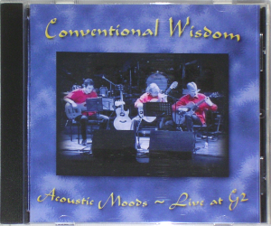

| £8 |
 |
Samples
Afterglow (468KB)
Dance on a Volcano (468KB)
|
1. No Son of Mine
2. Dancing with the Moonlit Knight
3. Carpet Crawlers
4. Driving the Last Spike
5. Cuckoo Cocoon
6. Congo
7. Fading Lights
8. Blood on the Rooftops
9. Follow You, Follow Me
10. Afterglow
11. Horizons
A Trick of the Tail Suite
12. Dance on a Volcano
13. Entangled
14. Squonk
15. It's Yourself
16. Mad Man Moon
17. Robbery, Assault and Battery
18. Ripples
19. A Trick of the Tail
20. Los Endos
All Tracks by Genesis
|